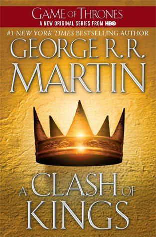

A Clash of Kings
⭐️⭐️
Format: audio (37 hours 12 minutes)
Overall, this is a slow-moving series, is bit more graphic in some areas than I would prefer, and is more of a medieval series than fantasy. Despite all that, I'll continue to listen to them, but take a little break while I hit a couple new releases.
- Previously: Empire State
- Next: I Will Lead You Along